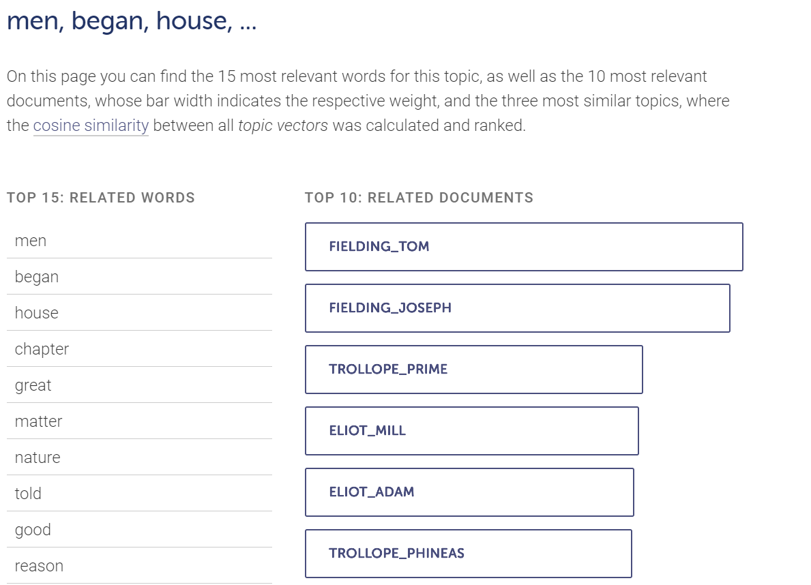
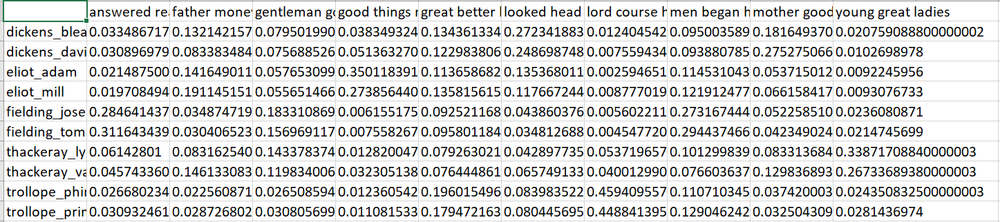
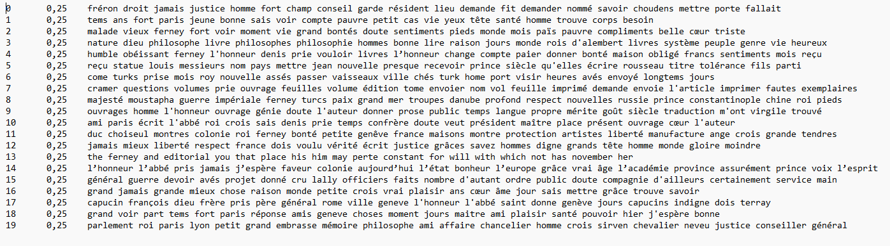
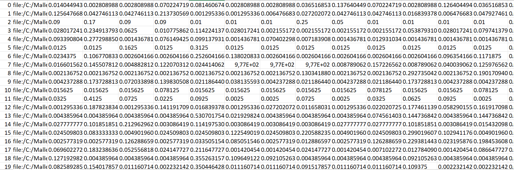
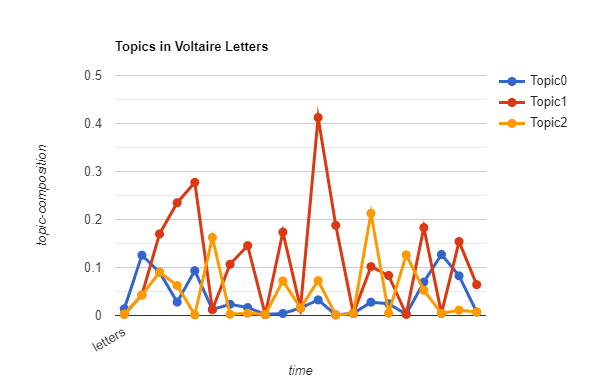

<!doctype html>
<html lang="de">
  <head>
    <meta charset="utf-8">

		<title>Stabi Tool Tuesday</title>

		<meta name="description" content="A colaborative learning space for all things DH">
		<meta name="author" content="Roman Kuhn">

		<meta name="apple-mobile-web-app-capable" content="yes">
		<meta name="apple-mobile-web-app-status-bar-style" content="black-translucent">

		<meta name="viewport" content="width=device-width, initial-scale=1.0, maximum-scale=1.0, user-scalable=no, minimal-ui">

    <link rel="stylesheet" href="dist/reveal.css">
    <link rel="stylesheet" href="dist/theme/white.css">
  </head>
  <body>
    <div class="reveal">
      <div class="slides">
         <section data-markdown data-separator="^\n---\n" data-separator-vertical="^\n--\n" data-separator-vertical="^\n--\n" data-charset="utf-8">
          <script type="text/template">
          <!--content goes here-->

          ## Stabi Tool Tuesday
          ### 5 - Topic Modeling <!-- .element: class="fragment" -->
          19.12.2023

          ---
          ### Tool Tuesday
          Ein kollaborativer Raum, um DH-Methoden und tools zu diskutieren... auszuprobieren... zu experimentieren...

          ...manchmal auch zu scheitern?

          --

          ### no code
          (für den Moment jedenfalls)
     

          --
          
          Folien und weitere Materialien finden sich hier: https://github.com/r0man-ist/tooltuesday

          Die heutigen Folien hier: https://r0man-ist.github.io/tooltuesday/slides/TopicModeling.html

          Kontakt: roman.kuhn@sbb.spk-berlin.de

---
### Überblick über die Reihe
jeden zweiten Dienstag

im Moment sechs Termine fest geplant:
* Datenquellen und Schnittstellen
* Datenstrukturierung mit OpenRefine
* OCR/HTR
* Named Entity Recognition (NER)
* **Topic Modeling**
* Netzwerkvisualierung (Gephi)


--
Orientiert an einer (prototypischen) DH-'pipeline'

Forschungsidee/Forschungsfrage

&#8618; Daten suchen (und finden); Daten generieren

&#8618; Daten aufbereiten

&#8618; Daten auswerten, transformieren

&#8618; Ergebnisse (und neue Daten) publizieren/visualisieren

--
Weitere Termine/Themen bei Bedarf

Bring your own data


---
### Topic Modeling

Was ist Topic Modeling? <!-- .element: class="fragment" -->

Was ist ein 'Topic'? <!-- .element: class="fragment" -->

---

### Verfahren

Unüberwachtes machine learning <!-- .element: class="fragment" -->

LDA (latent dirichlet allocation) <!-- .element: class="fragment" -->

> "powerful, widely applicable, easy to use, and difficult to understand — a dangerous combination" (Weingart 2011)<!-- .element: class="fragment" -->

--


--

Preprocessing

- Tokenisierung
- Stopwords
- NER?
- POS-tagging


---

### DARIAH TopicsExplorer

[Download](https://github.com/DARIAH-DE/TopicsExplorer/releases/tag/v2.0)

Kein Installation nötig (Windows/Linux; für Mac siehe [hier](https://dariah-de.github.io/TopicsExplorer/#getting%20started))


--



--

Export





---

### Mallet

[Homepage & download](https://mimno.github.io/Mallet/)

[Tutorial und Hinweise zur Installation]([https://programminghistorian.org/en/lessons/topic-modeling-and-mallet)

--

Topic Modeling Voltaire's letters 1770–1771

1470 Briefe

--

Input data & Preprocessing

<pre><code data-trim data-noescape>
bin\mallet import-dir --input Voltaire --output voltaire.mallet --keep-sequence --stoplist-file stopwords-fr.txt
</code></pre>

--

Train model

<pre><code data-trim data-noescape>
  bin\mallet train-topics  --input voltaire.mallet --num-topics 20 --output-state topic-state.gz --output-topic-keys voltaire_topics.txt --output-doc-topics voltaire_composition.txt
  </code></pre>

--

Topics



--

Verteilung auf Dokumente



--

Eine (etwas unsinnige) Visualisierung




---

### Further reading

Ted Underwood: Topic modeling made just simple enough (2012)[html](https://tedunderwood.com/2012/04/07/topic-modeling-made-just-simple-enough/)
Shawn Graham, Scott Weingart,  Ian Milligan: Getting Started with Topic Modeling and MALLET (2012) [html](https://programminghistorian.org/en/lessons/topic-modeling-and-mallet)


---

## Danke für die Aufmerksamkeit

09.01.2024: Netzwerkvisualierung ([Gephi](https://gephi.org/))


</section>
         
        </script>
        
      </div></div></body>
    </div>
    <script src="raphael-min.js"><
      <script src="flowchart-latest.js"></script>
    <script src="dist/reveal.js"></script>
    <script src="plugin/markdown/markdown.js"></script>
    
    <script>
      Reveal.initialize({
    plugins: [ RevealMarkdown ]
  });
    </script>
    

  </body>
</html>